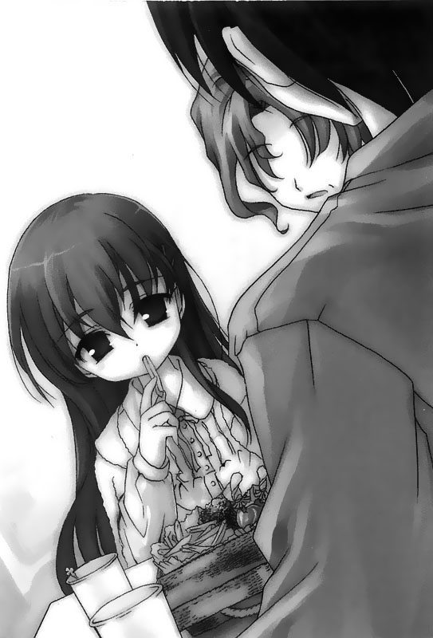

回到顶部

前往底部

05.ラムネ79's (ラムネより)


过了护士站的走廊旁有一间类似谈话室一样的地方。在这个没有人活动而显得寂寥的谈话室中有几张沙发、铁制的折凳，还有一台尺寸蛮大的电视。
谈话室中的二十八寸映像管电视里头今天也同样播放着没什么特别的新春特别节目，而这般无聊的特别节目前方有一名女性观众。我从背后看不见她的长相，不过她的背影看起来十分幼小；比起「女性」这样的字眼，也许更适合用「女孩」来称呼她吧。
（……是国中生么？还是小学生呢？）
她身上穿着一件粉红色的睡衣，娇小的身子流露出一股稚嫩的气息。那一头及腰的长发让我觉得印象深刻。
凭着一股莫名的念头，而不是什么特别的意图，我走上前，打算叫唤这名女孩。就在看到那张侧脸时，我忍不住愣了一下。
——她……长的非常可爱——不，也许比起可爱，我更该用美丽，或者楚楚可怜来加以形容。
她的容貌看来确实跟介于小学与国中之间的女生无异，不过她美丽的模样却散发出一股独特鲜明的存在感。
我并非什么恋童癖，也没有异于常人的癖好，然而，我想她的美貌即便是一般人走在路上和她擦身而过，百分之百每个人都会惊讶地回过头去看她才对。
就在这时候，我的脑中不知为何竟浮现出了几个月没见的挚友，望月的脸庞。我想他现在应该已经交到女朋友了吧？没有任何下流的想法，我在走进这间谈话室的瞬间，胸口忽然涌现了一股莫名的悸动。
我在想着，像这样的一个小女孩，她的身上究竟有什么东西可以让她焕发出这种光彩呢……我边想边望着她的面容，一个不小心就望出了神。
我看着她，心里正焦急地想挤出什么能够让我顺利和她攀谈的字句，却在这时候注意到了她手上的塑胶手环。
（那是……白色的……跟我一样的手环。）
换句话说，她也是住在这个临终疗养病房的病人了。
就在我发现这点的同时，我胸中的那股悸动忽然一下子沉了下来；方才那般急欲和她攀谈而找不出适切的词语时的焦躁感也同时消失。我不知道究竟是什么原因让我出现这般心理上的极大落差，不过真要说的话，也许是她跟我一样，通往未来的门扉都被堵住了。而我察觉到了这般残酷的现实，才让我有这样的心情反应吧。
「哈啰，你觉得这个节目有趣么？」
此时我的内心已经不再充斥着方才那般澎湃的冲动，和找不出适切词语的焦虑了，而是如何面对一个普通小女生一般开口说话。
「没有……」
面对我的问话，她只是简简单单地回答了一句。比起我内心缓和下来的冲动，她的回答更显得冷淡许多。
即便我出声唤她，她也没有回头，而是一脸无趣地始终盯着眼前的电视荧幕。
（……真这么无聊，那你还看它干么？）
我一边这么想，一边在谈话室里面的铁制折凳上坐了下来，同时跟着她一起看起了电视。除此之外，我也没其他事可做；或者说，我什么也不能做。
荧幕中映出的是一月初总会制作的新春特别节目，不是些无聊的模仿秀，就是一些即兴表演。除此之外，还有节目中的主持人笑得像个笨蛋一样的声音，偶尔会孤单地回荡在这个日照充足的白色房间。
「你呀……是第几次来这里的？」
忽然间，她开口了。即便她的目光仍然直视着电视荧幕，不过这些话是对着我说的。
「什么第几次来这里？」
「就是七楼啰。」
「抱歉，我还是听不懂你的意思。」
「…………是第一次呀……」
我想我没有回答她的问题，不过她倒是径自为我下了定义。
「这样的话……这里也没有其他人了，就由我来负责吧。」
「……负责？」
「嗯，这边的规定就是这样……」
她点点头，然后为我说明，这边的不成文规定就是有人得为初次来到这个七楼病房的人说明这边的事情。不过……为什么会有这样的不成文规定呢？
她带着缓和的语调张开了口：
「那你仔细听好哦……」
我听她娓娓道来，这其中有许多部分跟我从医生那儿听来的有些不同。
根据医生所述，这层病房是院方提供病患等待医疗技术进步时休息的场所，还说这里是为病患们抚慰心灵的场所。我想，对一般人而言，这样的说法应该是没有错吧？然而，在我身边的这个女孩却说，这只是这间临终疗养病房成立的宗旨，但事实上并非如此。
她说，这层七楼病房是这间医院里面唯一没有进行医疗行为的地方。换句话说，这里纯粹只是让病患安静的等待死亡的地方。
其实我也这么想，她和我对于这层病房存在的意义有着同样的看法。
「我是第二次了……」她说。
「什么第二次？」
「……第二次来到这里。」
接着，她继续解说，而我从她的口中得知，这层七楼病房似乎不是进来之后就一定会一直待到死亡。住进这里的病患，虽说得到的病症无法进行治疗，不过若身体状况稍有好转，院方就会允准返家修养。
然而，一旦再度恶化，那么原本住在这里的病患就得再次回到这里。
换句话说，住进了这层七楼病房，不是死在这里，就是还来不及回来便死在家里。就这么两种结局，似乎还没有任何人幸免。
而她，则是第二次再住进来了。
「还有，我只说一次……接下来你要仔细地听……」
……她看着无聊的电视节目，接着再继续把她该说的话给说完，而话中所说的，并非一般院方说给病人听的熄灯时间等等病房中的规则，而是这层病房内的定理……
「如果你第三次被院方通知可以出院，那你就得做好心理准备了。因为绝不会有第四次……第三次出院再住进来以后，你就再也回不了家了。」
「如果你想逃走，不要选择A车站，而是该往B车站去。」
「你若想结束这一切，那么绝食是最快的方法，也是带给家人负担最小的方法。」
诸如此类的内容听在我的耳中，好比是她被人强行灌输到了她脑子里的条文。而这些条文，恐怕是只有住进这间七楼病房里的病患——在这些将死的人之间口耳相传的。
「……你刚刚说你要负责的，该不会就是这件事吧？」
「嗯，是啊……有一天你也得将这些事情告诉下一个第一次来到这里的人……」
她将这些最后一句话说完之后便起身朝我走了过来。就在她和我擦身而过的同时，那一头飘逸的长发晃过了我的眼前。
「那我得去量体温，先失陪了……」
说完她头也不回的将我一个人丢在这间谈话室里头，独自朝着走廊的那头离去。此时我的周围只剩下了电视喇叭里头传来的艺人的笑声，和窗边摆放的白色花朵。
结果，从我和她碰头到她最后离开，她一次也没有将目光放在我身上。
——一月八日。
新春特别节目的时间终于告一段落，而国中和高中的第三个学期也差不多要开学了。这天，那女孩的身影依旧出现在护士站那头的谈话室中，发着呆似的将视线仅仅扣在电视机上。
「真无聊……」
「是呀……」
这是我俩之间的对话，然而彼此的视线却都没有移开电视荧幕。
「喂，这边的生活永远都是这样么？」我问。
「……你想说些什么？」
「没有啦，我只是想问，这边是不是一直都这么冷清？」
这层七楼病房里头，除了我跟这女孩，医生、护士，还有偶尔可以看见的神父和看护人员之外，就再也没有其他人进来过了。
「是不是因为过年的关系呢？」我问。
「……你想知道原因么？」
「啊、那个……我没有特别的想知道什么……」
「那我就不说了。」
这般若有似无的对话形式就在我们冷淡的反应中进行着。
只能敞开十五公分宽的窗子外面送进了些许微风，时而撩起了她的长发和窗边的白色花朵。
我和她，坐在这间谈话室里看着屋里的电视消磨时间。
……话说，这层七楼病房里真的很少看到其他人影。其中稍微年轻一点的病人只有我跟她两个人而已，剩下的顶多就是几个坐着轮椅的老人家偶尔出来晃晃了。因此，我们两个人一起坐在这间谈话室里茫然地看着电视机的时间就相对占了相当大的比例。
「喂，你呀……」我问。
「……什么事？」
「算了，不问了」。
其实我也真的没什么话想问，于是在她回答了以后又禁住了口。
这个小女生基本上不管对我开口说什么都不会把视线放在我身上。即便偶有例外，她看我的眼神也都带着愠怒般的严肃表情。而她瞪人的模样，在她端丽的五官造成的对比之下总也会散发出一股摄人的魄力。
事实上，就连她说话时的语气用的也都是面对比起自己年纪小的人那般不拘小节的态度，种种行为表现都让我觉得这小鬼实在令人有些费解。
「诶呀，你们两个人都待在这里呀？」
一名上了年纪的护士边说边走进了这间谈话室。
我偶尔会瞟一眼护士站里的情况，猜想她大概是七楼病房的护士长吧。
「濑津美，怎么样，身体还好么？有没有发烧？」
濑津美……看来就是这个小女生的名字了。
「你要听话哦！不然大家都会担心的！」
「……有什么关系么？」
「你怎么可以这么说呢！最近的小孩怎么都是这么难教呀！」
这名护士突出了这句话之后，接着又对着那个叫做濑津美的女孩叨叨了几句。而她——濑津美则是一副不以为意的样子丝毫不予理会，不顾这个啰嗦的护士继续说些什么，自顾自地看着无聊的电视节目。
「好啦，那我们待会过来帮你做抽血检查哦。」
上了年纪的护士丢下这句话后，转身离开谈话室，回到护士站去。
「我说你呀……啊，不对——嗯……我叫你濑津美可以吧？」我看了看套在她手上的白色手环，确认了牌子上写的血型跟名字之后开口叫了她的名字。
「………………」
「是发生了什么事了么，濑津美？」
「………………谁准你直接叫我的名字的？」
「啊？」
「你年纪比我小吧……」
「我、这……为什么你觉得我年纪比你小？」
「没有啊，我猜的。」
我倒不是因为有人觉得我年纪小而生气。虽然我确实有张娃娃脸。不过我想我的年纪怎么看也比她来得大。少则大她五、六岁，甚至十岁也有可能。因此我将收在我胸前口袋里的驾照掏出来亮在她的面前说道：
「你看，我虽然看起来年纪小，不过我可是已经二十一岁了哦！」
「……………………果然。」
她瞥了一眼我的驾照，然后不屑地吐出了简短的结论。
「喂，你在说什么呀？」
「我是比你大几岁呀，怎么了吗？」
她回答时依旧没有任何表情。而那双眼睛，目光虽然仅仅扣在电视机上，但看起来好似望着视线深处某个不知名的地方。
——数天后。
我做完了早晨的体温记录，一个人走在通往医院附设餐厅的路上。
我已经数个月没有来这间医院的附设餐厅了。
这是一间非常宽敞的附设餐厅，里头供客人用餐的餐桌大约有两、三百张。
这天医院似乎没有开放门诊，整间餐厅显得空荡荡的。
之前我固定时间往返医院，还有住在四楼病房的时候，我都会来这边吃饭。但自从我住进了七楼病房，这还是我头一次再到这里用餐。
是咖啡好呢？还是冰激凌好呢……我站在入口处的餐劵贩卖机前犹豫着不知道该点些什么东西。至于让我犹豫的原因不全然是这两样餐点的售价，而是这两样餐点之前都在医生的禁止项目之中，不过在我住进七楼病房之后，这些禁令却全都解除了。医生说，只要没有暴饮暴食，或者是吃些过于刺激性的食物，吃的方面已经没有其他限制。
「——这该不会，也是因为我已经是七楼病房的病患吧……」
我大口大口的吃着附设餐厅里面提供的冰品一边嘟囔着。
现在在我手上是已经隔了半年没有吃到的香草冰激凌。与其说它好吃，倒不如说有种令人怀念的味道。
吃完冰激凌之后我离开餐厅，来到中央电梯附近。就在这时候，我看到了站在医院大门内侧望着门外的那个女孩——濑津美。我想她大概是刚从医院外头回来吧。至于她有没有得到院方的外出许可？我想应该是没有。
濑津美之前因为恣意离开医院而被忽视责骂，我猜她八成已经成了惯犯了。
（……她该不会，其实是想逃离这间医院吧……）
我脑中浮现这个可能性的同时，打消了一度想要出声叫住她的念头。
我看了看手表。十点半。
「……距离午餐时间还有一个小时以上呢。」
我嘟囔着走向医院大门，小心翼翼地不让护士或者医生发现，偷偷的溜出了门外。
出了医院大门的瞬间，冬天一股冷飕飕的寒风仿佛针锥一般刺进了我皮肉之中。这样冰冷的气息，让我在仅仅十秒钟内就为了自己只穿着一件薄薄的睡衣便溜出医院这件事感到后悔。
我缩着身子，在寒风中颤抖着朝向目的地前进——而这个地方就是我刚住进七楼病房时听到的，B车站。
住进七楼病房的病患，若不是死亡在七楼病房……就是死在家里……没有一个人例外……
然而，如果想逃的话，依照那些条文，目的地不应该定在A车站，而是B车站。而她，濑津美恐怕已经去过这个B车站好几次了。
「……该不会其实她是想搭电车离开，可是却被什么人发现了吧？」
即便我的脑中浮现出了这样的疑问，不过我们身边应该没有什么监视人员才对。然而，就在我这么想的时候，我也意识到了，我们七楼病房的病患跟其他楼层的病患其实完全不能相提并论。
我不知道这件事情是真是假，不过七楼病房好像曾经出过这么一个令人觉得困扰的患者。他擅自离开了医院，总是让医院里的医生们为他相当担心。而我听说他在生命来到尾声时逃离这间医院的方式不是搭乘电车，是由朋友驾着车带他逃走的。
该不会真有监视人员……我边想边走在清晨通往车站的路上。
我步行一会儿，约二十五分钟后来到了车站前。换算成公车车程，大约四个站牌的距离。
「……这边人还真多。」
由于我穿着睡衣。站在车站里头还引来不少狐疑的眼神，但这倒不至于构成什么问题。
——想逃离医院的话，就要往B车站逃……看来这些条文内容果真不假，只要我买了车票，大概想去哪里都可以到得了吧。
「…………那为什么她没有逃走呢？」
如果她真的想要逃走，其实应该是轻而易举才对……我站在早晨的车站前，看着快步往来通行的人群。一会儿之后我才又转身往医院走了回去。
当晚，病房的熄灯时间刚过不久。我看腻了手边的漫画书，却也睡不着觉，于是一个人在医院里头晃着。
一般来说，医院熄灯之后若还有病人在病房外头乱晃是会被护士念的，不过我们七楼病房的病患在这方面则相对地自由许多。
走廊上的灯光转暗，就在我经过一片漆黑的谈话室时，那女孩的身影又出现在里头。
「嗨……我看到你今天站在一楼望着门外呀？」
「……嗯。」
一片漆黑的谈话室内，濑津美回了话，视线却始终放在窗子外头。我面对她，打算开口告诉她今天发生的事。
「话说……我今天早上去了一趟车站。」
「……是哦。」
「我依照你告诉我条文，到了B车站去。」
「……然后呢？」
「嗯，也没有然后啦……」
她的反应和平常没有什么两样，从没把头撇到我的方向，回话的方式也始终是以冷淡的语气吐出简单的字句。
我原以为想要逃离这间医院的她，听到我说的话之后会有什么不同的反应。
在我实际尝试过之后，知道要逃离这间医院其实相当简单。而从这点来看，是不是她根本没有想要逃跑的打算呢……
「……我再过几天，就要回去了。」
「咦？」
她忽然开口，吐出的话似乎是针对我的期望而说的。
「不过这是第二次了……所以我们也许不会再见面了也不一定……」
「嗯……是、是哦……」
我想她所说的「回去」应该是院方允准她出院回家疗养了吧。
这层七楼病房，似乎还没有人经历第三次住院之后又还活着出院的。特别是住在这边的高龄患者，他们病情恶化的速度远比我们这些年轻人来的快。因此第三度住院后又出院的情况就更不可能发生在他们身上了。
此时的我和濑津美，因为身体看起来还算是健康，因此还没有坐着轮椅移动的必要。不过这是因为我们还年轻，病情恶化的速度相对于我们的年纪没那么快的关系。
然而，像我们这个年纪的病患，病情一旦开始恶化就会一口气演变成非常严重的结果，因为，非常讽刺的，所有看来年轻而健康的病患待在这层七楼病房里头的时间其实非常短暂。也因为这个缘故，像我们这些年轻的七楼病患几次出院的过程中，活着重逢的机会也相对非常有限。所以，方才她那句话中所代表的涵义，其实是一种永别。
「我说……你呢？是你的话你会怎么选择？」
「选择？」
「……我是问，你会想死在哪里。」
「…………」
忽然听到「死亡」这个词语，让我的意识忽然呈现一片茫然，不知道该如何是好。
「这……我不知道。我还没想过。」
「……这样啊……毕竟你还是第一次进来嘛。」
她的言语中，喃喃道出了一种落寂的心绪。
其实，这个议题一点也不唐突。
因为我也不可能永远住在这里。
我的未来就和其他的七楼病患一样，在反复地出院、住院的过程中身体逐渐衰弱，然后不是死在这层七楼病房，就是在家人虚假的笑容包围中永远闭上我的眼睛。
「我……讨厌我的家……可是我也讨厌这里……」她说。
「……那你要怎么办呢？」
「……能怎么办？我想我会在我还可以走路的情况下远远的离开这两个地方吧。」
「远远离开这两个地方……你……」
她说她既不喜欢自己的家，也不喜欢这层七楼病房。然而，她明明可以逃走，现在却依然留着这里……我觉得这两者根本上相互矛盾，于是开口问道：
「那你有其他可以去的地方么？」
「…………」
她沉默了一会。
「……你不打算阻止我么？」
「咦……」
「还是……你想跟我一起走呢？
「啊、那个……我没这个意思……」
「那……你就别再问我这个问题了吧。」
她看着窗外，带着冷淡的语气脱口说出最后这一句话。会话的过程中她依旧没将自己的视线放在我身上。然而，就在这个时刻，她那张一贯面无表情的脸庞，此时似乎透露出了些许的哀伤。
我在初次来到这里时被告知第三次出院即是我们七楼病患的生命终点；而眼前的她即将迎接第二次出院返回家疗养的既定安排……现在的我，对于现实还无法产生切身的体认。因此她口中所说的这一切，对我来说仍旧好比电视荧幕中晃过的某一段故事情节。
然而……是不是有一天，我的脸上也会浮现出和她一样的表情呢……
——数天后。
这天，天亮前便下起了雨。在偶尔也飘着雪的天候中，只有细雨连绵不断地下着。而我，则是同样待在那个固定的地方茫然的望着电视荧幕。
今天的七楼，依旧没有什么人在病房外面闲晃。
「……这个节目很有趣么？」
「很无聊……」
她从外头走来，丢了一个问题给我。得到答案之后，她便没有继续开口，默默地找了张铁制折凳坐了下来。于是，我们便一如往常地一起坐在谈话室中，看着无聊的电视。
……我想她大概也跟我一样，没有其他事好做——或者说，我们本来什么事也不能做。
「啊……」
此时，她稀奇的对着电视中的一幕起了反应。
「怎么了么？」
「……没有。」
没有——她这句话尽管答得跟平常一样，表现出来的反应却有着微妙的不同。这样的改变也让我觉得意外，于是跟着把注意力一起放到了电视机上头。
画面中映出了一处不知名的山林景观。那里有着茂密的树林和繁盛的野花，看起来非常漂亮。这其中，满山遍野的白色花朵让人觉得印象深刻。
——这花我认得。
在这片自然景观中的白色花朵，外观和现在我们身边窗台上花瓶中插的花朵非常相似。
「……该不会……这些花跟那朵花瓶里面的花其实是同一种花吧？」
「…………」
「你看，长得很像耶？」
我边说边伸手指着电视机的画面，和窗边瓶子里的百花。
「……不对啦。」
「咦？不对吗？」
「这两种花是同属没错……不过真正要说的话其实不是同一种……」
她瞟了一眼窗边瓶子里的花朵，然后又转过头对着电视机开口道。而我听到她的否定后，却怎么也无法区别二者之间的差异。
对我来说，这两种花究一不一样其实都没有差别。相对的倒是平时绝不会对我提出的话题感兴趣的她，此时表现出来的态度让我觉得更在意一些。
她的外表真的长得非常可爱，然而平时总是表现出一种对于眼前发生的一切完全不以为意的空空的眼神，却在这个时候对我说的话有了稍微深入的回应。
「我说你……该不会对于这些花花草草的东西很清楚吧？」
「……没有啊。」
「是么？可是我怎么也看不出这两者到底有什么差别呢？」
我茫然地回望了望电视机映像管中映出的白花，和绽放在她那张侧脸延伸处的花朵，接着又问：
「喂，这是兰花还是百合么？」
「……」
「你看，这些花都是白色的嘛？」
「……」
事实上我对于这些花真的压根没有兴趣，但还是随口丢出了几句话继续试探她的反应。然而，此时的她却旋即又拾回了平时那般不理人的态度，一言不发的将视线移回了无聊的电视机上头。
眼看这段对话过程应该就此结束，就在我不抱任何期待地打算再回头看我的电视时——
「水仙花。」
「嗯？」
「水仙花啦……」
她开口的同时，初次将视线移到了我的身上，转头的瞬间也带起了一头及腰的长发画出了一道波浪，伸手指着电视机荧幕的直视着我。
这时我才发觉，她一身白皙的肌肤和手腕上的白色手环，白得几乎跟电视机中的花呈现出同样的颜色。
而初次正对着我的那张脸，似乎勾起了一抹若有似无的微笑。
——数天过去，冬天最严寒的时刻到来。
就在这个外头有许多学生们都在准备升学考试的季节里，我们仍旧待在护士站那头的谈话室中，无聊地看着电视。
「真无聊……」我说。
「……是呀。」
在这般称不上交谈的对话里，我们仍旧做着无谓的事情消磨多余的时间。
「说话……你什么时候离开？」
「…………今天。」
「哦，是今天呀。」
所谓的离开是指日前她跟我提到的，院方允准她出院的事。
「我们……也许不会再见面了也不一定呢。」她说。
「嗯？嗯，是啊……」
事实上，依照惯例，就算她能够活着回到这层七楼病房。但我想我们在这里碰面的机会也许并不是那么的高了。
「……你呢？你决定了么？」
「你说……你要死在哪里的问题么？」
「嗯。」
「不，我还没有决定。」
「……哦。」
她带着些许落寂的神情点点头。我想，这不知道是不是第二次出院的人才有的反应？毕竟死亡这种事对我来说还没有切身的体认，而第一次出院返家调养的许可，医生也还只字未提。
……话说，不知道她对于这个问题的答案，是不是已经有了确切的决定了？我记得她好像曾经说过，她既讨厌家，也讨厌医院……
「濑津美，东西准备好啰。」
话说的是忽然出现在这间谈话室里的一名年长女性，我想这位大概就是濑津美的母亲吧。
她有着一头长发，身上穿着一件时髦的外套，外表看来与其说是一位母亲，倒不如说她更像一位年长的姊姊。
「那我们该走了，你准备好了么？」她说。
「……嗯。」
「那我们先走了。」
这位阿姨对着坐在一旁的我礼貌性点了点头，牵起自己女儿的手，打算带她离开这间谈话室。然而……
「……」
濑津美似乎压根儿没有要离开的打算。
母亲牵起了她的手，她却不知道为什么。仍坐在椅子上一动也不肯动。
「怎么了么，濑津美？」
「我觉得……有点难受……」
「咦？难受？哪里难受？胸口么？还是肚子？」
「……胸口。」
「这——你等我一下！我马上叫医生过来！」
这位阿姨慌慌张张地踩着访客用的拖鞋，赶紧往护士站跑了过去。
在她离开之后，这里只剩下低头坐在椅子上的濑津美和我两个人而已了。
「你没事吧？」
我小小声地对着她开口问道。但事实上我对她得的究竟是什么病，而病情发展到什么样的程度完全不了解。
面对她，我所知道的只有她挂在手腕上的白色手环上写的名字，濑津美，和她的血型，O型。
不过话说回来，我和她同样是这层七楼病房的病患，因此我想她的病情严重程度，至少是在我之上才对。
「我说你呀，在医生赶过来以前要不要先在这边稍微躺一下？」
我伸手指着一旁的长椅——在我刚住进这层七楼病房时，它就已经放置在这间谈话室的角落了——对着她开口说道。
「如果你需要的话，我可以扶你一下。」
「不需要……我没事。」
她说完便径自站起了身子。
「咦？啊、嗯？你……」
你别逞强呀……就在我这句话想说却还没来得及说出口的时候，她已经走出了这个房间。
「怎么回事呀她？」
——这天晚上，熄灯时间已过。
我像平常一样看腻了手边的漫画书，因为睡不着而在医院里头闲晃。而就在我走到熄灯之后一片漆黑的谈话室时，在里头又看到了她的身影。
「嗨，你还留在这里呀？」
「……嗯。」
「为什么呢？病情又恶化了么？」
「……没有。」
她没有回头，一双眼睛自始至终望着窗外地吐出了这般简短的回答。
即便她没有直接提及，不过我想院方开给她的出院许可应该是撤销掉了。
至于下一次的出院许可会是什么时候下来，我当然无从得知。不过我想，这个等待期至少会以「周」为单位，而不是以「日」为单位吧。
「那个……我在想，你今天说你身体不好……该不会是装的吧？」
「…………」
想想这种说法也许本身就有问题，因为我们本来就身体不好，根本不能说装出来的。
「换句话说…………你其实不想出院返家疗养是么？」
「……我不知道你在说什么。」
「毕竟你已经没有时间了……」
「…………」
她没有回话。
之前她曾经好几次问过我同样的问题——你想死在家里还是这里……我说我没有决定，而她则是说她讨厌自己的家，也不喜欢这层七楼病房。
「我看你……就算真的想离开这里，也不想回家，但其实你也没有其他地方可以去吧？」
「……就算真是如此……那又怎么样呢？」
「没有啊……」
一样的谈话室，她一样从头到尾没将视线移到我的身上。濑津美在这个一片漆黑的小房间中，茫然地一个人望着窗外的景致。
现在不过才晚上十一点，不过这间医院已经将大部分的照明全部都关掉了。这里是日常和非日常的交界。
对于我们这些七楼病房的病患来说，除了这里和自己家，我们已经哪儿也不能去了。而她从一片昏暗的七楼病房望向窗外，望着所谓的日常。那个世界中的大楼和住家仍旧灯火通明，急着返家的人赶路的身影也随处可见。然而我，即便仍没有深刻的体认，不过已经是这层七楼病房的居民。现在的我已经跨入了这个非日常的世界，再也回不去了。
——数日后。
这天早上我量完了体温，再次来到了医院的附设餐厅。
我之前才到这里的时候还一片空荡荡的，不过今天似乎是由一堆前来内科挂号看诊的人，早已经将餐厅挤得满满的。
我在餐券的自动贩卖机前稍微思索了一下之后选择了咖啡。这张咖啡券要一百元，我拿着它来到柜台换了咖啡之后，找了张空桌子坐了下来。
「好烫……」
我将这杯刚充好的咖啡贴到嘴边喝了两口，接着再将松饼切块放入口中。
这边的餐点味道不说，价钱便宜倒是它的一大特色。甚至我吃的松饼根本是免费放在餐厅入口处任凭顾客自取，不收钱的。我想医院附设餐厅大概都不是以营利为目的的吧……就在我不着边际地思索着的同时，忽然有一个声音叫住了我。
「日安。」
是濑津美的母亲。
她看着我，对我点了点头。而站在她身边的则是一贯穿着那一套粉红色睡衣，双手捧着托盘的濑津美。
「啊、呃……午安……」我也对着濑津美的母亲点头回应，我们日前才见过面。
「不好意思，我们可以坐这边么？」
「啊、嗯，当然，请坐……」
此时餐厅里的餐座几乎都坐满了。我答话的同时，也将自己端来的托盘拉到自己面前，空出另一半桌子让给她们放她们点的东西。
「濑津美，我们坐吧。」伯母说。
「……嗯。」
对此，她是表现出了些许的不快的模样，应了一声之后还是乖乖坐下。
她坐在我的对面，短暂地正眼和我对上之后又旋即别开了视线。
「…………」
我们之间没有交谈，不过她仍旧和平时一样丝毫不打算将目光放在我的身上。然而，这对于平时只要看那一张侧脸的我来说，却也有种非常奇妙的感受……不，我想不单单只是因为和她面对面的关系，而是平时的她绝不会散发出一种生活的气息。尽管本人曾说她的年纪比我长上几岁，不过那张稚嫩的脸庞和可爱的容貌——或者更应该用「美丽」来加以形容——总给人一种非现实的观感。因此，这天和她在这里碰面——而且还跟她的母亲一起——真的有种非常新鲜的感受。
「那我们开始用餐吧，濑津美？」
伯母从她手中提的袋子里取出了一个小小的篮子，篮子打开之后可以看见里头装着薯条、炸鸡，还有一些沙拉等等菜肴。
「如果你不介意的话要不要来一点呢？」
伯母开口的同时，也将她手中的小篮子提到了我的面前。
「啊、谢谢……」
其实我并不饿，不过我还是伸手拿了一块可乐饼。虽然温度已经不够了，不过这块可乐饼爽脆的面衣和有点咸咸的味道还是相当美味。
「濑津美，你呢？你要吃什么？」
「……薯条。」
她说完也从篮子里面拿了一块炸薯条，一口一口往嘴里送。这幅模样出乎意料地可爱，让我不自禁的看呆了。
——这家伙，在自己的妈妈面前倒是意外地坦率嘛……我一边想着，一边伸手欲拿走第二块可乐饼。而就在这时候……
「那妈妈的工作时间到了，我要先走啰。」
「……嗯，好。」
「那我傍晚会再过来看你。」
伯母和濑津美一人一句道别了之后，伯母对着我点了点头，接着便转身走向餐厅入口处。
她离开时留下了一只装着饮料的纸杯、一个才刚掀开盖子的食物篮子，还有默默地吃着薯条的濑津美。
「……」
我看着她。虽然这时候并不找不到话题可以聊，不过我却觉得现在要开口说些什么并不是一件容易的事。
濑津美长得真的很漂亮，很可爱。不过即是她再怎么可爱，身上始终也都散发出一股神秘的气质。
她曾说自己比我年长，我想她应该没有说谎才对。然而，现在看她忙着吃薯条的模样，却怎么看也都只是个孩子……就在我思考着这个问题的同时，一个不小心，我的注意力就全放在她的身上，望着她那张可爱的脸庞和一口一口吃着薯条的模样。
「……怎么了么？」
「咦……」
「……没事就不要那样一直盯着我看。」
「啊、啊……对不起。」|
听到她的不满，我这才发现自己竟然望着她出了神。这让我觉得有些不好意思，于是随口丢出了一个话题：
「我说，你喜欢马铃薯么？」
这句话没有特别的意涵，纯粹只是因为她从头到尾都只挑薯条吃，于是直接式的这么问罢了。
「……」
然而，面对这个琐碎的问题，她并没有及时回答。一会之后，我看她的嘴唇张开，原以为她会像往常一样简短地回我一句：没有啊……然而——
「……嗯，喜欢。」
她的话回得同样简短，不过回话的方式却显得相当肯定。而且，她更是稀奇地在回话的同时提起了自己的眼睛，将一双视线紧紧扣在我的脸上。